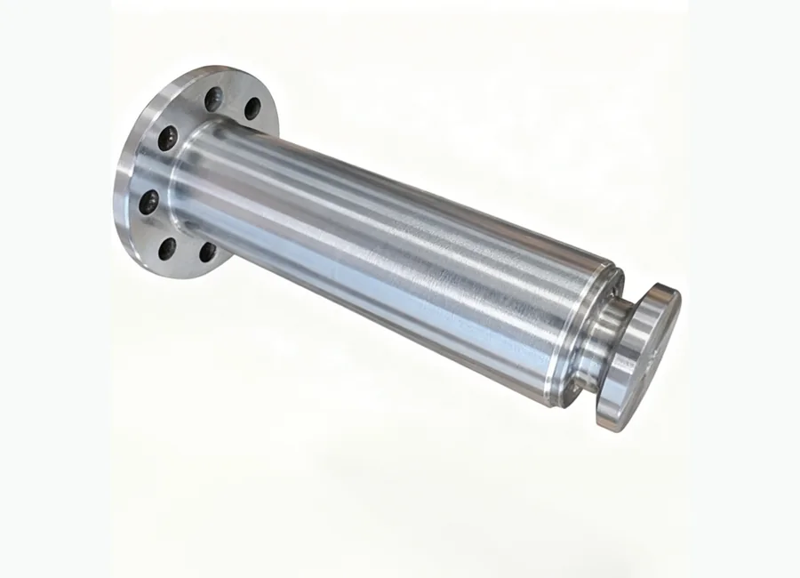
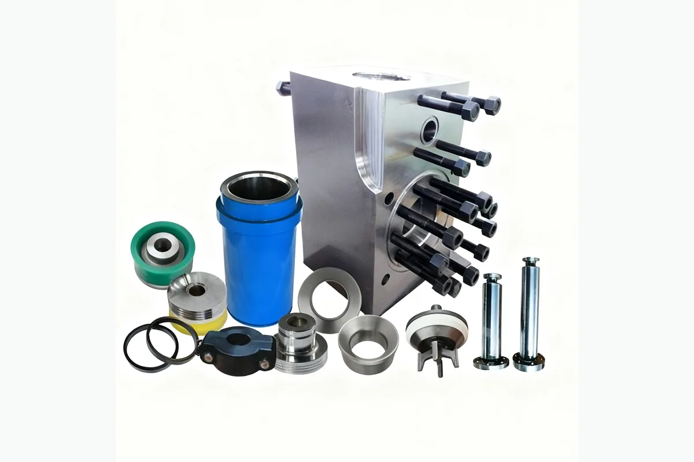

Как запросить цену
- Отправьте номер детали или модель оборудования.
- Можно приложить фото продукта или технический чертеж.
- Мы проверим совместимость и подготовим предложение.
Буровые насосы и запасные части
буровой насос серии HHF. Поставка для буровых, ремонтных и нефтесервисных проектов в Казахстане и странах Центральной Азии.

Используется для нефтепромыслового оборудования, буровых установок, насосных систем, устьевых операций, тормозных и гидравлических узлов в зависимости от категории продукта.
Подбор спецификации, экспортная упаковка, коммуникация на русском языке, WhatsApp и email поддержка для покупателей Центральной Азии.
Описание
Изображения с пометкой «добавить в описание» размещены здесь, а не используются как главная фотография товара.

Модели и спецификации
Если в исходной папке есть таблица с моделями, она отображается здесь для удобства подбора и запроса цены.
| 图号（Номер чертежа） | 名称（Наименование） | 图号（Номер чертежа） | 名称（Наименование） | 图号（Номер чертежа） | 名称（Наименование） | |
|---|---|---|---|---|---|---|
| GH3161-03.01(G) | 键（Шпонка:50.8×241.3） | GH3161-04.01(G) | 十字头（Крестовина） | GH3161-05.01.00(G) | 液缸总成（Цилиндр в сборе） | |
| GH3161-03.02(G) | 小齿轮轴（Вал шестерёнки） | GH3161-04.02(G) | 上导板（Верхний ползун） | GH3161-05.02(G) | 缸盖法兰（Фланец крышки цилиндра） | |
| GH3161-03.03(G) | 耐磨套（Устойчивая втулка к изношению） | GH3161-04.03.00(G) | 垫片组（Набор шайбы） | GH3161-05.03(G) | 缸盖（Крышка цилиндра） | |
| GH3161-03.04(G) | 端盖（Крышка） | GH3161-04.04(G) | 调整垫片（Шайбы наладки） | GH3161-05.04.00(G) | 插板总成（Розетка в сборе） | |
| GH3161-03.05(G) | 密封垫圈（Уплотнение） | GH3161-04.05(G) | 填料盒（Сальник） | GH3161-05.05.00(G) | 阀杆导向器 (下)（Направляющий стержень клапана(нижний)） | |
| GH3161-03.06(G) | 密封垫圈（Уплотнение） | GH3161-04.06(G) | 油封环（Кольцо сальника） | GH3161-05.06.00(G) | 缸盖堵头（Пробка крышки цилиндра） | |
| GH3161-03.07(G) | 轴承套（Стакан подшипника） | GB/T3452.1-1992 | O 形圈（О-образное кольцо:190×3.55G） | GH3161-05.07(G) | 定位盘（Фиксирующий диск） | |
| GH3161-03.08(G) | 挡圈（Защитное кольцо） | GH3161-04.07(G) | 双唇油封（Двухсторонее уплотнение:5"×6.25"×0.625"） | GH3161-05.08(G) | 缸盖密封圈（Уплотнение крышки цилиндра） | |
| GH3161-03.09(G) | 密封垫圈（Уплотнение） | GH3161-04.08(G) | 密封垫圈（Уплотнительная шайба） | GH3161-05.09(G) | 排出管路（Выпускной трубный канал） | |
| GH3161-03.10.00(G) | 集油盒（Масласборник） | GH3161-04.09(G) | 端盖（Крышка） | GH3161-05.10(G) | 阀弹簧（Клапан пружины） | |
| GH3161-27.01(G) | 密封垫环（Уплотнение:R39） | GH3161-04.10(G) | 锁紧弹簧（Стопорная пружина） | GB/T3452.1-1992 | O 形圈（О-образное кольцо:95×5.3G） | |
| GH3161-27.02(G) | 底塞（Заглушка） | GH3161-04.11(G) | 挡泥板（Грязезащитное крыло） | GH3161-05.11.00(G) | 阀总成（Клапан в сборе） | |
| GH3161-27.03.00(G) | 气囊（Диафрагма） | GH3161-04.12(G) | 中间拉杆（Натяжной рычаг） | GH3161-05.12(G) | 阀盖密封圈（Уплотнительное кольцо крышки клапана） | |
| GH3161-27.04.00(G) | 外壳总成（Кожух в сборе） | GH3161-04.13(G) | 十字头销（Штифт крестовины） | GH3161-05.13(G) | 阀盖（Крышка клапана） | |
| GH3161-27.05(G) | 盖（Крышка） | GB/T3452.1-1992 | O 形圈（О-образное кольцо:125×7.0G） | GH3161-05.14(G) | 缸套密封圈（Уплотнительное кольцо втулки） | |
| GH3161-27.06(G) | 三通（Тройник:NPT1/4） | GB/T70-1985 | 螺钉（Винт:M20×65） | GH3161-05.15(G) | 耐磨盘（Антифрикционный диск） | |
| GH3161-27.07(G) | 接头（Штуцер:NPT1/4） | GH3161-04.14(G) | 密封垫（Уплотнение） | GH3161-05.16(G) | 缸套法兰（Фланец втулки） | |
| GH3161-27.08.00(G) | 压力表罩总成（Крышка манометра в сборе） | GB/T3452.1-1992 | O 形圈（О-образное кольцо:160×7.0G） | GH3161-05.17.00(G) | 缸套压盖（Крышка втулки） | |
| GH3161-27.09.00(G) | 排气阀（Клапан выделения воздуха） | GH3161-04.15(G) | 下导板（Нижний ползун） | GH3161-05.18(G) | 活塞杆（Шток поршня） | |
| Y-60 | 双刻度抗震压力表（Манометр антидетонации:0~25MPa (0~3630psi)） | GH3161-04.16(G) | 十字头销挡板（Козырёк штифта крестовины） | GH3161-05.19.00(G) | 喷淋管总成（Разбрызгивающее устройство в сборе） | |
| JZR3-L8 | 角式截止阀（Запорный клапан，奉化市新华液压件厂） | GH3161-04.17(G) | 十字头轴承（Подшипник крестовины:254941QU） | GB/T3452.1-1992 | O 形圈（О-образное кольцо:200×7.0G） | |
| GH3161-27.10(G) | 垫圈（Шайба） | GH3161-05.41.00(G) | 弹簧导向（Направляющая пружина） | GH3161-05.39(G) | 排出口堵板（Выпускная пробка-плита:5"） | |
| GH3161-05.20(G) | 缸套锁紧环（Стопорное кольцо втулки） | GB/T5782-1986 | 螺栓（Болт:M22×60） | GH3161-05.01.06(G) | 螺母（Гайка:M39×3-6H (SPL)） | |
| GH3161-05.21(G)、GH3161-05.21A(G) | 双金属缸套（Двухметаллическая втулка）、普通缸套（Обычная втулка） | GH3161-05.25.00(G) | 吸入管路（Всасывающая труба） | GH3161-05.29(G) | 挡板（Козырёк） | |
| GH3161-05.22.00(G) | 卡箍总成（Хомут штока в сборе） | GH3161-05.26.00(G) | 垫片组（Набор шайбы） | GH3161-05.30(G) | 螺栓（Болт:M10-6g×20） | |
| GH3161-05.23(G) | 缸套端盖（Скрышка втулки） | GH3161-05.27(G) | 阀杆导向器 (上)（Направляющий стержень клапана(верхний)） | GH3161-05.31(G) | 活塞密封圈（Уплотнение поршни） | |
| GH3161-05.24.00(G) | 活塞（Поршень） | GH3161-05.28(G) | 双头螺栓（Двухголовная шпилька:M39×3-6g×265） | GH3161-05.32.00(G) | 活塞螺母（Гайка поршни） | |
| GB/T3452.1-1992 | O 形圈（О-образное кольцо:190×7.0G） | GB/T3452.1-1992 | O 形圈（О-образное кольцо:345×7.0G） | GH3161-05.35(G) | 吸入法兰 (Ⅱ)（Всасывающий фланец (Ⅱ)） | |
| GH3161-05.33.00(G) | 吸入空气包（Всасывающий воздушный мешок） | GH3161-05.34(G) | 吸入法兰 (Ⅰ)（Всасывающий фланец (Ⅰ)） | GB/T6170-1986 | 螺母（Гайка:M27） | |
| 图号（Номер чертежа） | 名称（Наименование） | |||||
| GH3161-27.01(G) | 密封垫环（Уплотнение:R39） | |||||
| GH3161-27.02(G) | 底塞（Заглушка） | |||||
| GH3161-27.03.00(G) | 气囊（Диафрагма） | |||||
| GH3161-27.04.00(G) | 外壳总成（Кожух в сборе） | |||||
| GH3161-27.05(G) | 盖（Крышка） | |||||
| GH3161-27.06(G) | 三通（Тройник:NPT1/4） | |||||
| GH3161-27.07(G) | 接头（Штуцер:NPT1/4） | |||||
| GH3161-27.08.00(G) | 压力表罩总成（Крышка манометра в сборе） | |||||
| GH3161-27.09.00(G) | 排气阀（Клапан выделения воздуха） | |||||
| Y-60 | 双刻度抗震压力表（Манометр антидетонации:0~25MPa (0~3630psi)） | |||||
| JZR3-L8 | 角式截止阀（Запорный клапан，奉化市新华液压件厂） | |||||
| GH3161-27.10(G) | 垫圈（Шайба） | |||||
| GH3161-27.11.00(G) | 空气包充气软管总成（Воздушный шланг в сборе） |
Запрос
Отправьте номер детали, модель, фото продукта или технический чертеж. Мы проверим совместимость и ответим с деталями предложения.